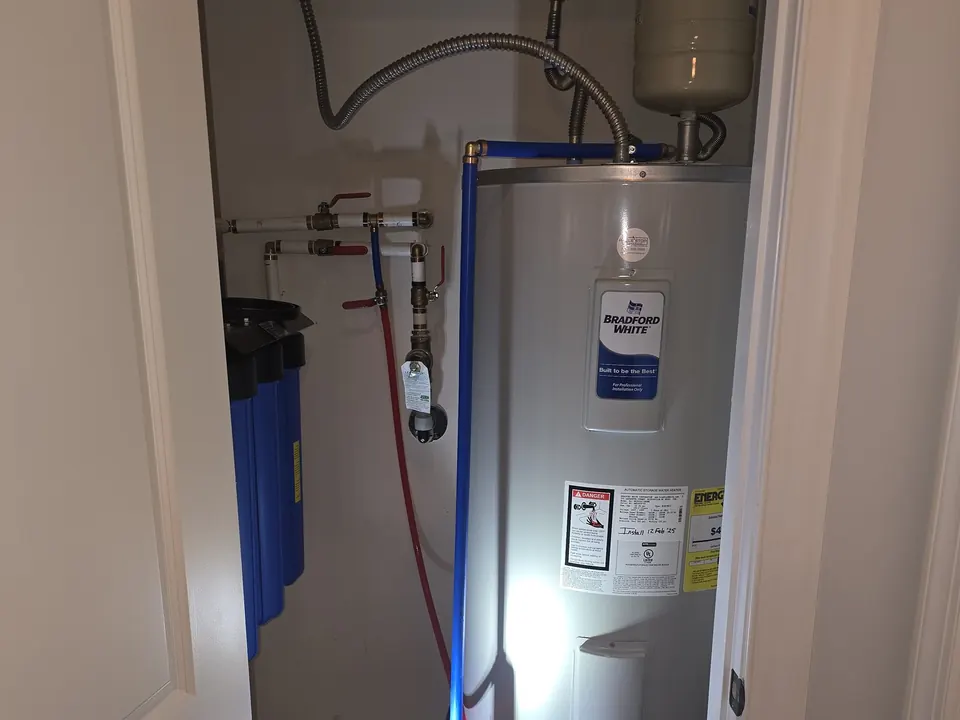
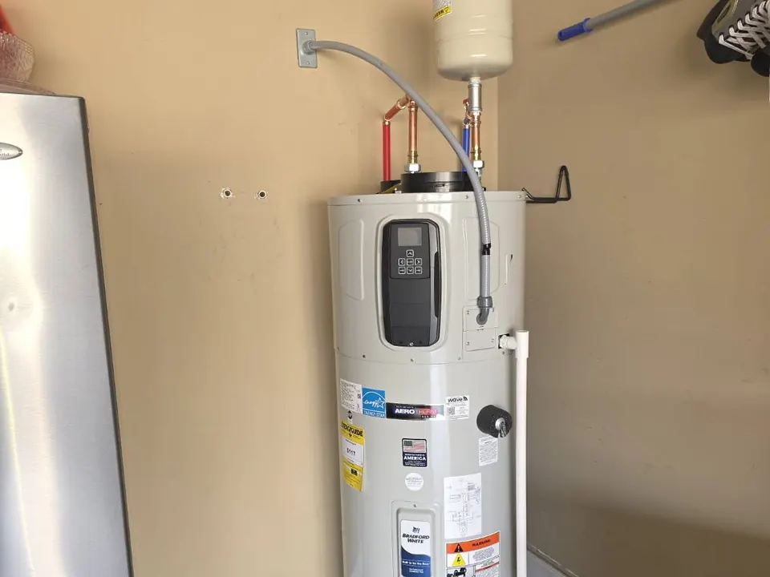
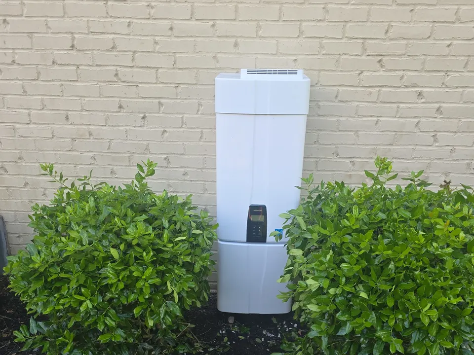

A failing water heater can disrupt your entire day. No hot water, inconsistent temperatures, strange noises, leaks, or rising utility bills are all signs it may be time for professional service. At Angle Stop Plumbing, we work on a full range of systems and help customers choose the right solution for their property, usage needs, and budget.
Schedule Water Heater Services Today!
Water Heater Services We Offer
Angle Stop Plumbing provides complete service for all major hot water systems, including:
- Electric water heater service, repair, and installation
- Gas water heater service, repair, and installation
- Heat pump water heater service, repair, and installation
- Tankless water heater service, repair, and installation
Whether your current unit needs a simple fix, routine maintenance, or full replacement, we can diagnose the issue and recommend the most practical next step.
Conventional Electric & Gas Water Heater Services
Traditional tank-style water heaters remain one of the most common and dependable options for homes and commercial properties. We provide full electric and gas water heater repair in Murfreesboro, along with replacement and installation services throughout Middle Tennessee.

Our conventional water heater services include:
- Diagnosing heating issues
- Repairing leaks, valves, and connections
- Replacing worn components
- Flushing tanks and performing annual maintenance
- Installing new electric water heaters
- Installing new gas water heaters
- Replacing outdated or inefficient units
If your tank water heater is producing rusty water, running out of hot water too quickly, or making banging or popping sounds, it may be time for service.
Heat Pump Water Heater Service, Repair & Installation
For property owners looking for better energy efficiency, heat pump water heaters can be an excellent option. These systems use less energy than many standard models and can help reduce monthly utility costs over time.

Angle Stop Plumbing provides:
- Heat pump water heater maintenance
- Troubleshooting and repairs
- System replacement
- New heat pump water heater installation
If you are considering an upgrade, we can help you determine whether a heat pump water heater is the right fit for your home or business.
Tankless Water Heater Service, Repair & Installation
A tankless water heater offers on-demand hot water without storing it in a large tank. These systems are popular for their energy efficiency, space-saving design, and ability to provide continuous hot water when properly sized and maintained.

We provide complete tankless water heater services, including:
- Tankless water heater diagnostics and repair
- Routine maintenance and descaling
- New tankless water heater installation
- Replacement of older tankless units
- Performance checks and efficiency evaluations
If your tankless unit is showing error codes, losing performance, or not keeping up with demand, our team can inspect the system and restore reliable operation.
Signs You May Need Water Heater Repair
If you notice any of the following issues, it may be time to schedule service:
- No hot water
- Water that takes too long to heat
- Inconsistent water temperature
- Unusual noises from the tank or unit
- Water pooling around the heater
- Discolored or rusty hot water
- Reduced hot water supply
- Unexpected increases in utility bills
Addressing problems early can often help prevent larger repairs or premature system failure.
Annual Water Heater Maintenance Matters
Routine maintenance is one of the best ways to extend the life of your unit and improve performance. Annual water heater service can help:
- Improve energy efficiency
- Reduce sediment buildup
- Catch small problems before they become major repairs
- Support better system performance
- Extend the lifespan of the unit
If you want to protect your investment and reduce the chance of losing hot water unexpectedly, regular service is a smart choice.
New Water Heater Installation in Murfreesboro & Middle Tennessee
If your current unit is outdated, unreliable, or no longer cost-effective to repair, Angle Stop Plumbing can help you select and install a new system. We install water heaters for both residential and commercial properties and make sure each system is properly matched to the size and hot water demands of the property.
We help customers choose between:
- Conventional electric water heaters
- Conventional gas water heaters
- Heat pump water heaters
- Tankless water heaters
Our goal is to make the installation process straightforward, efficient, and built to last.
Why Choose Angle Stop Plumbing?
Customers throughout Murfreesboro and Middle Tennessee trust Angle Stop Plumbing for:
- Experienced water heater service and repair
- Prompt response times
- Quality installation workmanship
- Honest recommendations
- Service for residential and commercial properties
- Knowledge of conventional, heat pump, and tankless systems
We understand how important reliable hot water is to your home or business, and we work to provide solutions that are dependable, efficient, and cost-effective.
Serving Murfreesboro & the Immediate Middle Tennessee Market
Angle Stop Plumbing proudly provides water heater services in Murfreesboro and across Middle Tennessee. If you need water heater repair, water heater installation, or annual water heater maintenance, our team is ready to help restore comfort and convenience to your property.
Schedule Hot Water Heater Service with Angle Stop Plumbing
From routine maintenance to complete replacement, Angle Stop Plumbing is your trusted source for hot water heater service, repair, and installation in Murfreesboro and Middle Tennessee. If your unit has quit working, your hot water is inconsistent, or you’re ready for a new installation, we’re here to help with professional plumbing solutions tailored to your needs.